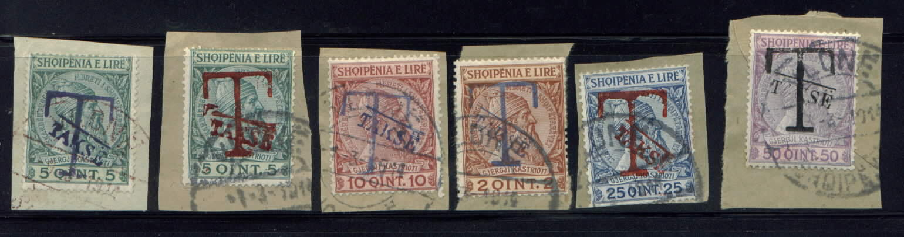
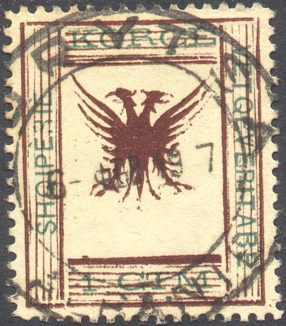
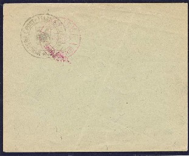
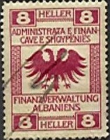
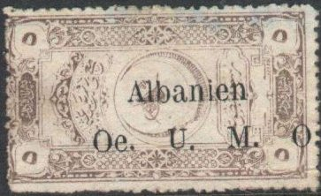

No "T" overprint; only "TAKSE"
Return To Catalogue - Albania 1913-1915 - Albania 1916-1920
Note: on my website many of the
pictures can not be seen! They are of course present in the
catalogue;
contact me if you want to purchase the catalogue.
With bar on top of "TAKSE" and large "T"

2 q brown (overprint blue) 5 q green (overprint red or violet) 10 q red (overprint blue) 25 q blue (overprint red) 50 q violet Surcharged and overprinted "TAKSË"
No "T" overprint; only "TAKSE"
10 pa on 5 q green 20 pa on 10 q red 1 Gr on 25 q blue 2 Gr on 50 q violet
Value of the stamps |
|||
vc = very common c = common * = not so common ** = uncommon |
*** = very uncommon R = rare RR = very rare RRR = extremely rare |
||
| Value | Unused | Used | Remarks |
| 2 q | * | * | |
| 5 q | * | * | blue overprint: *** |
| 10 q | * | * | |
| 25 q | * | * | |
| 50 q | ** | * | |
Surcharged |
|||
| 10 pa on 5 q | * | * | |
| 20 pa on 10 q | * | * | |
| 1 G on 25 q | * | * | |
| 2 G on 50 q | * | * | |

Mystery stamp with 'T' overprint and Scutari overprint in red.
Reduced sizes
4 q red 10 q brown on green 20 q on 2 k orange 50 q on 5 k brown
Value of the stamps |
|||
vc = very common c = common * = not so common ** = uncommon |
*** = very uncommon R = rare RR = very rare RRR = extremely rare |
||
| Value | Unused | Used | Remarks |
| All values | ** | ** | |
4 q olive 10 q red 20 q brown 50 q black
Value of the stamps |
|||
vc = very common c = common * = not so common ** = uncommon |
*** = very uncommon R = rare RR = very rare RRR = extremely rare |
||
| Value | Unused | Used | Remarks |
| 4 q | * | * | |
| 10 q | * | * | |
| 20 q | * | * | |
| 50 q | * | ** | |

These stamps exist without the posthorn overprint.
4 q black on red 10 q black on red 20 q black on red 50 q black on red Overprinted 'Republika Shqiptare' in white
4 q black on red 10 q black on red 20 q black on red 50 q black on red
The 10 q also seems to exist with non-issued yellow overprint (I have never seen it).
10 q blue 20 q green 30 q brown 50 q brown
10 q blue 20 q red 30 q violet 50 q green
10 q red
4 q orange 10 q violet 20 q brown 30 q blue 50 q red
25 q violet 50 q orange Overprinted "14 Shtator 1943" in red (1943)
25 q violet
(Non issued stamps of Tarabosh overprinted with a circle)
2 pa brown 5 pa violet 10 pa green 20 pa red 40 pa blue (with black or red circle) 100 pa red 5 Pi black

I've seen many of these stamps with this cancel "BERAT 10
DEZ 1915" with a 'bulge' at the left side (the cancel is not
perfectly round).
1 pa green 20 pa red 50 pa blue 3 Pi red 6 pi brown
Non issued stamp of 1952, inscription "KOMITETIT TE QINDRESES" with Roosevelt, Kastrioti and Churchill, (other values exist):
Click here for the Albania Koritza local issue

Example
'10 PARA 10' (red) on black (or violet) '25 PARA 25' (red) on black (or violet)
These stamps were handstamped on letters.
Value of the stamps |
|||
vc = very common c = common * = not so common ** = uncommon |
*** = very uncommon R = rare RR = very rare RRR = extremely rare |
||
| Value | Unused | Used | Remarks |
| 10 pa | RR | RR | |
| 25 pa | RR | RR | |
Forgeries and reprints with little value exist, examples:
Forgeries, reduduced sizes.

Possibly reprints from the original plate
5 q green 10 q red 25 q blue 50 q dark brown 1 F orange Surcharged

'25 QINT' on 1 Frank orange Overprinted "TAKSE" and the word "POSTA" is barred
5 q green 10 q red 25 q blue 50 q dark brown 1 F orange
Value of the stamps |
|||
vc = very common c = common * = not so common ** = uncommon |
*** = very uncommon R = rare RR = very rare RRR = extremely rare |
||
| Value | Unused | Used | Remarks |
| All values | c | - | |
These stamps were supposed to be issued during a revolt in Mirdicia in 1921. However, later it was found out that the stamps were printed after the insurrection had already been suppressed.
There appear to be two types of these stamps, the most important difference being in the crossbar in the "Q" of "QINTAR" and also the brightness of the feathers and the claws.
The two types of these stamps.
I've seen the first type being cancelled with a circular "OROSHI 15 1 22" cancel.
Even essays exist of this issue, a block of nine (3 x 3) 10 q
stamps with the inscription removed from the centre column.
5 pa yellow (orange) 10 pa green 20 pa red 1 Pi blue (center light blue) 2 Pi violet and orange 5 Pi red and grey 10 Pi brown and lilac 25 Pi grey and yellow
I've seen these stamps with a 'Valona' in a circle cancel (with additional arabic text and date 16 OCT 1914). These stamps also exist with overprint 'T' (postage due), but I have never seen them personally and I don't know which values exist with this overprint.
5 p brown 10 p black 20 p red 40 p blue 60 p violet 80 p violet
This bogus issue was made and cancelled in Paris, I've also seen it overprinted with a large blue "T". These stamps are also mentioned in 'Les Timbres de Fantaisie' by Georges Chapier (in French).
(Reduced sizes)
The above stamps were rejected, because the eagle only has one head instead of two in the arms of Albania. According to 'Les Timbres de Fantaisie' by Georges Chapier however, these stamps were made by a certain Modiano and sold in Triest during an Albanian conference.
Bogus stamps of Epirus, overprinted with "SHQIPENIA", a double headed eagle and value in cents or Franc, pretending to be an issue of Albania:

I have seen the values 2 c on 1 l orange, 5 c on 5 l green, 10 c on 50 c brown, 25 c on 25 l blue, 50 c on 2 D black, 1 F on 1 D violet.
Envelope with a seal of the Postal Ministry:


Examples:



0.04 Fr lilac 0.08 Fr green 0.30 Fr red 1 F brown
Other values exist, also with value inscription in "QIND" instead of "FR.SHQ".
Other fiscal stamps of Albania.
Literature:
'The Alnis Guide to Albanian Revenues' by Relbnar, 1987 (34
pages)
Albania & Greece Revenues J.Barefoot Ltd 2002 (116 pages)


{kind=link}
{kind=link}
{kind=link}
{kind=link}
{kind=link}
{kind=link}